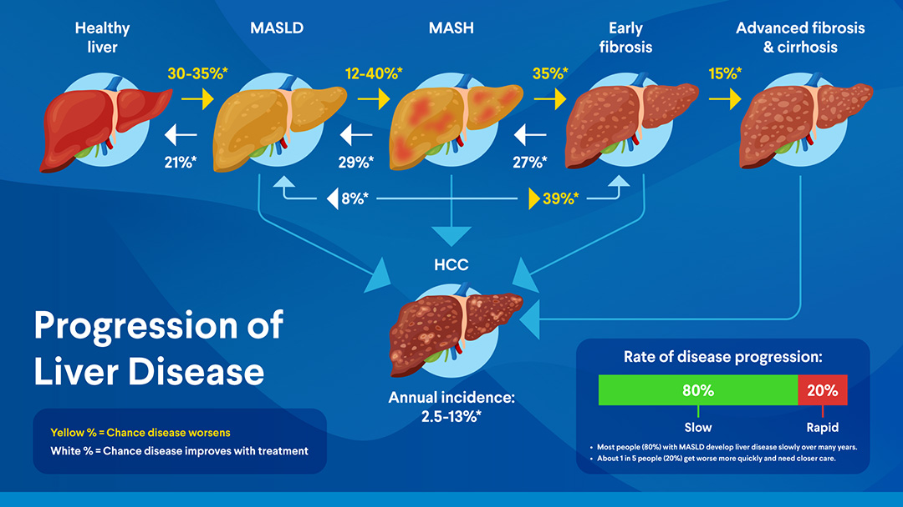

Penyakit Hati
Hati anda mungkin sedang rosak — tanpa anda rasa apa-apa.
Kebanyakan penyakit bagi signal: sakit, demam, penat. Tetapi organ hati ni lain. Ia boleh dimusnahkan diam-diam.
MASH (Metabolic dysfunction-associated steatohepatitis)— satu bentuk penyakit hati berlemak yang serius, yang boleh sebabkan kegagalan organ hati, tanpa sebarang simptom awal.
Yang membimbangkan: Kajian di Eropah mendapati lebih 87% kes MASH tidak pernah didiagnosis. Ramai yang ada — tanpa disedari.
Asas
Apa itu MASH?
Hati kita berfungsi seperti penapis — tapis racun, urus lemak dan gula, hasilkan protein penting. Ia mampu tanggung banyak tekanan.
Tetapi apabila terlalu banyak lemak terkumpul dalam sel-sel hati, ia mula cetuskan keradangan. Inilah yang berlaku dalam MASH.
1
Lemak terkumpul — Lemak berlebihan tersimpan dalam sel hati (steatosis).
2
Keradangan berlaku — Hati bertindak balas, menyebabkan sel-sel rosak (steatohepatitis).
3
Parut terbentuk — Jika keradangan berterusan, hati mula membentuk "luka" (fibrosis).
4
Sirosis atau kegagalan hati (liver cirrhosis) — Jika tidak dikawal, luka boleh sebabkan kegagalan organ hati.
MASH adalah sejenis MASLD (penyakit hati berlemak berkaitan metabolisme) yang lebih teruk. Dulu-dulu orang ingat berpunca dari minuman alkohol
Faktor Risiko
Siapa yang paling berisiko?
MASH tak berlaku secara rawak. Ia berkait rapat dengan keadaan metabolik badan.
Dalam kalangan individu yang obes: sehingga 30% mungkin mengalami MASH — berbanding hanya kira-kira 3–5% dalam kalangan mereka yang tidak obes.
Faktor risiko utama:
Berat badan berlebihan atau obes
Diabetes Jenis 2
Tekanan darah tinggi
Paras lemak darah tinggi
Berumur lebih 40 tahun
Sejarah keluarga penyakit hati
Penting untuk faham: MASH bukan "salah" pesakit. Kelebihan berat badan melibatkan perubahan hormon dan isyarat badan yang kompleks — bukan sekadar kurang bersenam atau makan berlebihan. Biologi mendahului pilihan.
Di Malaysia, lebih 50% orang dewasa mempunyai berat badan berlebihan atau obes — bermakna ramai yang mungkin berada dalam zon risiko tanpa sedar.
Perkembangan Penyakit
Betapa cepat ianya boleh merosot.
Ramai yang menganggap penyakit hati mengambil masa berdekad untuk menjadi serius. Tetapi bagi sesetengah pesakit MASH, kerosakan boleh berlaku lebih cepat daripada yang dijangkakan.

Rajah: Perkembangan penyakit hati — anak panah kuning menunjukkan peratusan pesakit yang bertambah buruk di setiap peringkat; anak panah putih menunjukkan peluang pemulihan. Kira-kira 80% pesakit merosot perlahan-lahan, tetapi 20% boleh merosot dengan pantas dan memerlukan perhatian lebih segera. (Sumber: Rethink Obesity / data perkembangan semula jadi MASH)
Mengapa ini penting? Peringkat awal tidak menunjukkan simptom. Pada masa simptom muncul, kerosakan mungkin sudah serius. Pengesanan awal adalah satu-satunya cara untuk menghentikan perkembangan ini.
Berdasarkan data daripada kajian biopsi berpasangan (Singh et al., 2015) dan ulasan semula jadi MASH (Loomba & Adams, 2019).
Bahaya Tersembunyi
Anda tidak akan rasa sakit — sehingga terlambat.
Hati tidak mempunyai saraf sakit macam otot atau kulit. Ini bermakna walaupun hati tengah meradang dan parut yang serius, anda mungkin tak rasa apa-apa.
"Ramai orang tak tahu mereka ada masalah hati sehingga doktor jumpa masa medical check-up — atau bila keadaan sudah teruk."
— Panduan Klinikal AASLD 2023
Apabila simptom muncul, ia biasanya bermaksud penyakit sudah berada di peringkat lanjut (dah lewat):
1
Rasa penat kronik yang tidak hilang walaupun berehat
2
Sakit atau rasa tidak selesa di bahagian kanan atas perut
3
Kulit atau mata menguning (jaundis) — tanda sirosis
4
Perut membengkak akibat cecair terkumpul
Sama seperti tekanan darah tinggi dipanggil "pembunuh senyap" — MASH juga beroperasi dalam diam. Bezanya, MASH boleh membawa kepada kegagalan hati dan kanser hati jika tidak dirawat.
Kaitan Penyakit
MASH tidak berhenti di hati.
MASH bukan penyakit hati semata-mata. Ia adalah sebahagian daripada rangkaian penyakit metabolisme yang saling berkait rapat.
| Kaitan | Apa yang berlaku |
|---|
| Penyakit Jantung |
Penyebab kematian nombor satu dalam kalangan pesakit MASH. Keradangan hati menyumbang kepada keradangan salur darah. |
| Diabetes Jenis 2 |
Rintangan insulin — punca utama MASH — juga memacu T2D. Hampir 65% pesakit diabetes ada MASLD. |
| Kanser Hati |
MASH adalah antara punca utama kanser hepatoselular yang semakin meningkat, terutama dalam kalangan yang tidak minum alkohol. |
| Obesiti |
Obes meningkatkan risiko MASH secara dramatik — dan MASH pula memperburuk kawalan berat badan melalui kesan metabolisme. |
Ini bermakna merawat MASH bukan sahaja melindungi hati — ia juga melindungi jantung, mengawal gula darah, dan mengurangkan risiko keseluruhan.
Ingin tahu lebih lanjut tentang kaitan antara obesiti dan penyakit kronik?
Pengesanan Awal
Ia boleh dikesan — jika kita tahu apa yang dicari.
Berita baiknya: MASH boleh dikesan sebelum simptom muncul, melalui ujian yang biasa tersedia. Garis panduan antarabangsa mengesyorkan saringan awal bagi mereka yang berisiko.
Langkah saringan biasa:
1
Ujian darah (ALT, AST, FIB-4) — Enzim hati yang tinggi boleh menjadi petanda awal. Skor FIB-4 menggunakan umur dan ujian darah untuk menilai risiko fibrosis.
2
Ultrasound abdomen — Cara mudah untuk melihat sama ada ada lemak dalam hati. Tidak menyakitkan dan biasa dilakukan.
3
Elastografi hati (FibroScan) — Mengukur kekakuan hati untuk menilai tahap fibrosis tanpa perlu biopsi. Tersedia di hospital-hospital besar Malaysia.
4
Biopsi hati — Ujian paling tepat, dilakukan hanya apabila diperlukan untuk pengesahan diagnosis atau penilaian terapi.
Siapa patut berbincang dengan doktor tentang saringan MASH? Sesiapa yang mempunyai berat badan berlebihan, diabetes, tekanan darah tinggi, atau paras lemak darah yang tidak terkawal — terutama jika gabungan beberapa faktor ini hadir.
Khabar Baik
Hati boleh pulih — jika dikesan awal.
Ini adalah sesuatu yang ramai tidak tahu: tidak seperti kebanyakan organ lain, hati mempunyai keupayaan luar biasa untuk memulihkan diri.
Boleh
Fibrosis hati berhenti berkembang dengan rawatan berat badan yang berkesan
Malah
Parut hati boleh berkurangan dan fungsi hati boleh pulih — jika dirawat sebelum sirosis
Kunci utama: Pemulihan hanya mungkin jika tindakan diambil sebelum parut menjadi sirosis penuh. Di peringkat sirosis, kerosakan adalah kekal. Inilah sebabnya pengesanan awal bukan sekadar cadangan — ia kritikal.
Kajian menunjukkan bahawa penurunan berat badan yang bermakna — melalui perubahan gaya hidup, ubat-ubatan, atau pembedahan — boleh secara langsung mengurangkan keradangan dan fibrosis hati.
Hati bukan sekadar organ yang menunggu untuk gagal. Ia adalah organ yang ingin sembuh — jika kita beri peluang.
Rawatan
Apa yang boleh dilakukan sekarang.
Rawatan MASH bermula dengan menangani punca utama: berat badan dan kesihatan metabolisme. Tiga pendekatan utama berdasarkan bukti sains:
1
Perubahan gaya hidup
Penurunan berat badan sebanyak 7–10% daripada berat badan asal boleh mengurangkan keradangan hati secara ketara. Ini melibatkan kombinasi pemakanan sihat dan aktiviti fizikal yang bersesuaian — bukan diet ekstrem.
2
Ubat GLP-1 (seperti semaglutide)
Ubat kelas GLP-1 — yang pada asalnya digunakan untuk diabetes dan obesiti — kini terbukti secara langsung membaiki keadaan hati dalam MASH. Ujian klinikal Fasa 3 (ESSENCE) menunjukkan 62.9% pesakit mencapai resolusi MASH selepas 72 minggu rawatan, berbanding 34.3% dalam kumpulan plasebo. FDA telah meluluskan semaglutide untuk rawatan MASH pada 2025. Perbincangan dengan doktor diperlukan untuk menentukan kesesuaian.
3
Pembedahan bariatrik
Bagi pesakit dengan obesiti teruk, pembedahan untuk mengurangkan saiz perut bukan sahaja menurunkan berat badan — ia secara langsung meningkatkan hasil hati dan mengurangkan fibrosis dalam MASH.
Pendekatan bersepadu: Rawatan terbaik menggabungkan pengurusan berat badan, kawalan penyakit berkaitan (diabetes, tekanan darah), dan pemantauan hati secara berkala. Tiada satu ubat atau cara tunggal yang mencukupi.
Mahu tahu anggaran keperluan kalori harian anda sebagai titik permulaan?
Rujukan & Pautan
Bacaan lanjut & sumber rujukan.
Carousel ini dibina berasaskan kajian semakan sistematik dan garis panduan klinikal yang diterbitkan. Semua statistik mempunyai sumber yang boleh disemak.
Carousel berkaitan di Aufthority:
Sumber Rujukan
- Singh S et al. Fibrosis progression in nonalcoholic fatty liver vs nonalcoholic steatohepatitis: a systematic review and meta-analysis of paired-biopsy studies. Clin Gastroenterol Hepatol. 2015;13(4):643–654. PubMed
- Loomba R, Adams LA. The 20% rule of NASH progression: the natural history of advanced fibrosis and cirrhosis caused by NASH. Hepatology. 2019;70(6):1885–1888. PubMed
- Quek J et al. Global prevalence of NAFLD and NASH in the overweight and obese population: a systematic review and meta-analysis. Lancet Gastroenterol Hepatol. 2023;8(1):20–30. Lancet
- Schattenberg JM et al. Disease burden and economic impact of diagnosed NASH in five European countries in 2018. Liver Int. 2021;41(6):1227–1242. PubMed
- Rinella ME et al. AASLD practice guidance on the clinical assessment and management of NAFLD. Hepatology. 2023;77(5):1797–1835. PubMed
- Sanyal AJ et al. (ESSENCE Trial). Semaglutide in MASH with liver fibrosis. Phase 3 results. FDA accelerated approval August 2025. AJMC
- Caldwell SH, Argo CK. Reversing advanced hepatic fibrosis in NASH. Dig Dis Sci. 2015;60(4):810–812. PubMed
- Younossi Z et al. The global epidemiology of NAFLD and NASH: a systematic review. Hepatology. 2023;77(4):1335–1347. PubMed
- Haron H et al. Prevalence and factors associated with MAFLD in Malaysia. Scientific Reports. 2026. Nature
- EASL–EASD–EASO Clinical Practice Guidelines on MASLD management. J Hepatol. 2024. ScienceDirect
Kandungan ini adalah untuk tujuan pendidikan awam sahaja dan bukan nasihat perubatan. Sila berbincang dengan doktor anda untuk penilaian peribadi.